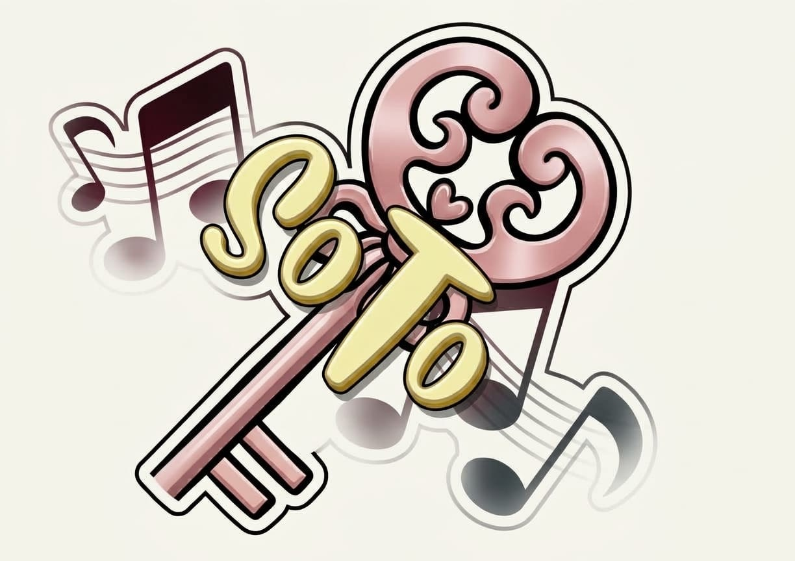

Logo kunci melambangkan kesempatan baru, harapan, serta keramahan dan kasih sayang. Not balok menggambarkan harmoni, kreativitas, dan fleksibilitas dalam menciptakan suasana yang menyenangkan.
Disini kita menggunakan beberapa elemen warna yang didominasi oleh warna Pink dan Kuning.
PINK : melambangkan kasih sayang, keramahan, kelembutan, dan kepedulian
KUNING : melambangkan kebahagiaan, optimisme, kreativitas, dan energi positif